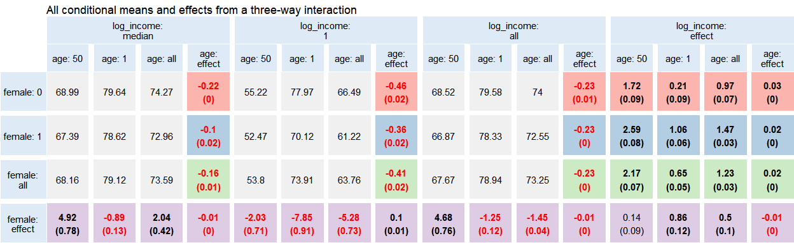
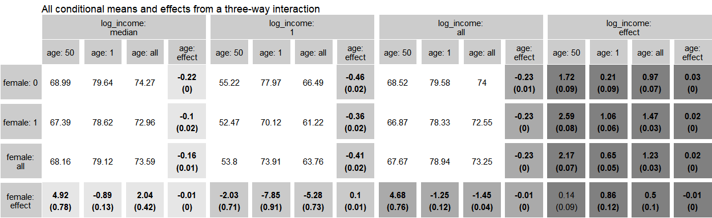

Rinteract makes it easy to output all conditional effects in models with interaction terms instead of computing hypothesis tests manually.
Installation
devtools::install_github("jonfoong/Rinteract")Overview
Interaction terms are widely used in regression models to uncover underlying heterogeneity. Despite its ubiquity, the interpretation of interaction models is often confusing at best and inaccurate at worst. In addition, studies typically only report estimates from a model output and neglect their conditional effects. As noted in Brambor et al (2006):
…the typical results table often conveys very little information of interest because the analyst is not concerned with model parameters per se; he or she is primarily interested in the marginal effect of X on Y for substantively meaningful values of the conditioning variable Z. While it is often possible to calculate the marginal effect of X for any value of Z from the typical results table using a little algebra, the problem is that it is not possible to do the same for the standard errors.
Demeaning variables before estimation partly resolves this issue. However, we may also be interested in effect sizes for specific conditions beyond just the mean. Consider a hypothetical drug treatment for which we are also interested in heterogeneity across genders. We estimate a simple model:
Y = α + β * Treat + γ * Female + δ * Treat * Female + ϵ
The estimated parameter δ̂ gives us the difference in treatment effect between male and female patients. However, we are also interested in the treatment effect conditioning on being a female patient, which is given by β̂ + δ̂. While this simple arithmetic can be performed by looking at a regression table, standard errors are not so easily obtained.
Rinteract facilitates this by computing all conditional effects in a model with interactions. It accepts a model object as input and relies on multcomp to perform hypothesis testing on all conditions of interest. It also provides functionality for graphing these effects via tabular ggplots that can be further manipulated.
Usage
We use data from the Rand Health Insurance Experiment from the sampleSelection package to illustrate an example. By default, int_conditions takes a fitted model and returns all effects and model predictions in the 0, 1, and mean condition for all variables.
data("RandHIE")
mod <- fixest::feols(xghindx~female*linc*xage|year, RandHIE)
dat <- int_conditions(mod, RandHIE,
fixef = list(year = factor(unique(RandHIE$year))),
.names = c(female = "female",
log_income = "linc",
age = "xage"))
dat |>
head(3) |>
rbind(dat |> tail(3)) |>
kable(digits = 3)| female | log_income | age | estimate | std.error | p.value | value | |
|---|---|---|---|---|---|---|---|
| 1 | effect | 0 | 0 | -8.819 | 1.034 | 0 | Causal effect |
| 2 | effect | all | 0 | -1.245 | 0.127 | 0 | Causal effect |
| 3 | effect | 1 | 0 | -7.950 | 0.917 | 0 | Causal effect |
| 62 | 0 | all | all | 74.000 | NA | NA | Level |
| 63 | 1 | all | all | 72.551 | NA | NA | Level |
| 64 | all | all | all | 73.251 | NA | NA | Level |
From the first row we see that the effect of being a woman, condition on income and age at zero, is -8.819. Obviously these conditions are of little analytical value. While int_conditions also returns mean conditions, we can also specify values for our variables to take.
median_inc <- round(median(RandHIE$linc), 3)
dat <- int_conditions(mod, RandHIE,
zero_con = c(xage = 50,
linc = median_inc),
fixef = list(year = factor(unique(RandHIE$year))),
.names = c(female = "female",
log_income = "linc",
age = "xage"))
dat |>
head() |>
kable(digits = 3)| female | log_income | age | estimate | std.error | p.value | value |
|---|---|---|---|---|---|---|
| effect | 8.984 | 50 | 4.920 | 0.781 | 0.000 | Causal effect |
| effect | all | 50 | 4.680 | 0.759 | 0.000 | Causal effect |
| effect | 1 | 50 | -2.025 | 0.708 | 0.004 | Causal effect |
| effect | 8.984 | all | 2.043 | 0.416 | 0.000 | Causal effect |
| effect | 8.984 | 1 | -0.886 | 0.132 | 0.000 | Causal effect |
| effect | all | all | -1.449 | 0.036 | 0.000 | Causal effect |
We can also visualize these effects using a graph. int_graph returns a tabular ggplot object that displays all conditional effects and model predictions and can be further manipulated. Highlighted cells correspond to effect estimates and standard errors and the rest are model predictions. Values in bold correspond to estimates with p-values <0.05.
dat |>
transform(log_income = ifelse(log_income==median_inc,
"median", log_income)) |>
int_graph(female~log_income+age, digits = 2) +
ggtitle("All conditional means and effects from a three-way interaction")
For scientific publications, we can change the color scheme using a few simple arguments since the output is a ggplot object.
dat |>
transform(log_income = ifelse(log_income==median_inc,
"median", log_income)) |>
int_graph(female~log_income+age,
digits = 2,
eff_var = "log_income",
col_level = "white",
col_label = "gray80",
col_values = "black") +
ggtitle("All conditional means and effects from a three-way interaction") +
scale_fill_grey(start = 0.9, end = 0.5)
Note: Technically, int_conditions will work for all models that are accepted by multcomp::glht.int_graph also only takes up to four-way interactions as of yet; for clarity I do not recommended going higher than this. One way to visualise five or higher way interactions is to choose up to four variables to plot, and then keep values for all other variables fixed before feeding into int_graph.